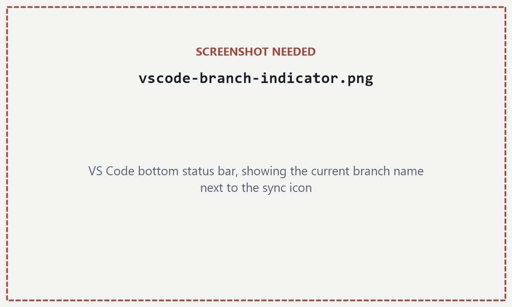
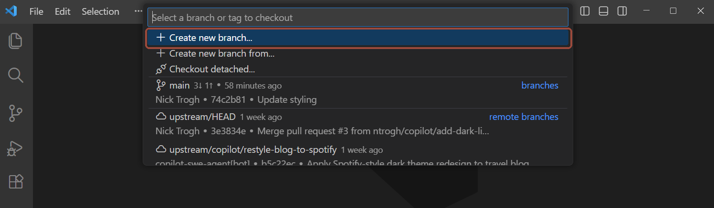
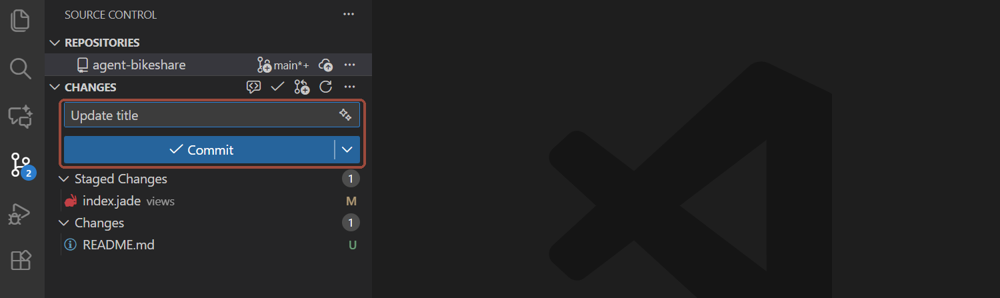
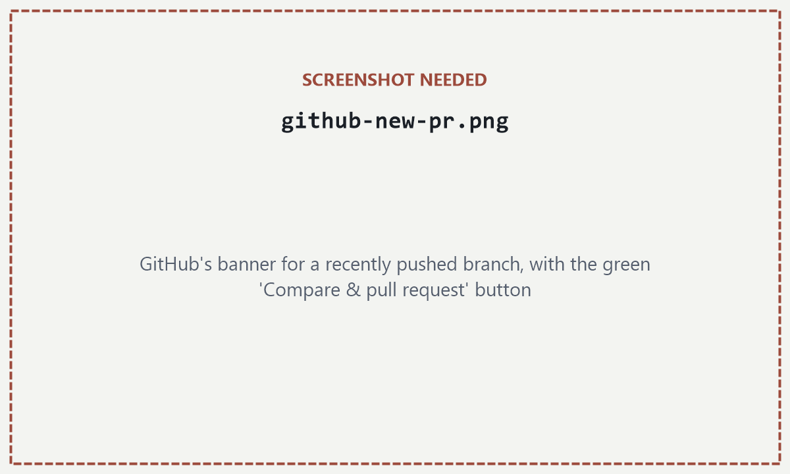

2Setup, click by click
This page takes you from a blank laptop to your name on the contributor list — every click and every command spelled out, including what your screen should say at each point and what to do when it says something else. Budget 45–60 minutes, most of it waiting for installers.
Only if you'll be contributing regularly. Just reading, or making a one-off small fix, needs nothing installed — see the paths in §1.2.
What you need before starting
- Your laptop — Windows or Mac, either is fine — and a stable internet connection.
- A GitHub account. No account yet? Create one free at
github.com/signup(2 minutes), and note the username you pick. - Your GitHub username whitelisted on the repo — the repo is private, so until you're added it's invisible to you. Message Charles on WhatsApp with your username (see §1.5). You can do Steps 1–5 while you wait.
How this page works
Eight steps, in order — don't skip ahead unless a step tells you to. Every step has the same shape:
- A Do this box tells you exactly what to click or type.
- A You should see box shows what your screen replies. Dark boxes are what the terminal will say — you never need to type what's in a dark box unless it's marked as the command.
- Where screens can differ, a “What did you get?” list follows. Click the line that matches your screen; it opens and tells you what to do next.
- A green Checkpoint closes each step — if it's true, you're ready for the next one.
Tick the done box in a step's corner as you finish it (skipped steps count — tick them too). Progress is remembered on this device, so you can stop and come back anytime.
First: which computer are you on?
The instructions differ between Windows and Mac, so pick one — the page will hide everything that doesn't apply to you. You can switch anytime with the small buttons in the sidebar.
Open a terminal
Goal: a window where you can type commands — you'll need it to check what's already installed.
A terminal is a window where you type an instruction, press Enter, and the computer answers in text. That's the whole trick — everything in this guide that isn't a mouse click happens here.
Press the ⊞ Win key, type powershell, and press Enter.
A blue or black window like this, with a blinking cursor at the end:
Windows PowerShell Copyright (C) Microsoft Corporation. All rights reserved. PS C:\Users\you> ▏
The line ending in > is the prompt — the terminal saying “I'm listening.”
Press ⌘+Space, type terminal, and press Enter.
A window like this, with a blinking cursor at the end:
Last login: Fri Aug 15 09:12:04 on console you@MacBook ~ % ▏
The line ending in % is the prompt — the terminal saying “I'm listening.”
You have a terminal window open with a prompt and a blinking cursor. (You'll only use this bare window for the next two steps — after that, everything happens inside VS Code.)
Do you have Git already?
Goal: find out whether Git is installed, so you know if Step 3 applies to you.
Git is the program that moves notes between your laptop and GitHub and keeps everyone's changes from overwriting each other. It has no icon and no window of its own — the only way to see it is to ask for it in the terminal.
Click inside the terminal, type this exactly (two dashes, no space between them), and press Enter:
git --versionWhat did the terminal reply? Click the one that matches:
✓A version number, like git version 2.51.0.windows.1
Git is already installed — you don't need Step 3 at all. Tick done on this step and on Step 3, then jump to Step 4.
✗Red text: git : The term 'git' is not recognized…
PS C:\Users\you> git --version git : The term 'git' is not recognized as the name of a cmdlet, function, script file, or operable program.
Completely normal on a fresh Windows machine — it just means Git isn't installed yet. (Older terminals phrase it 'git' is not recognized as an internal or external command — same meaning.) Go to Step 3.
What happened? Click the one that matches:
✓A version number, like git version 2.39.5 (Apple Git-154)
Git is already installed — you don't need Step 3 at all. Tick done on this step and on Step 3, then jump to Step 4.
!A window popped up: “The «git» command requires the command line developer tools. Would you like to install the tools now?”
That popup is Git's installer on a Mac — macOS is offering to fetch it for you. Don't dismiss it. Go to Step 3, which tells you exactly what to click.
✗zsh: command not found: git — and no popup
Git isn't installed and macOS didn't offer it this time. No problem — Step 3 has a command that makes the offer appear.
Install Git
Goal: git --version prints a version number. Skip this whole step if it already did in Step 2.
In your web browser, go to git-scm.com/download/win and click Click here to download. When the download finishes, open the .exe file.

An installer that asks a long series of questions over roughly ten screens — text editors, PATH, line endings. You don't need to understand any of them: the defaults are all fine. Click Next on every screen, then Install, then Finish.
A terminal only knows about programs that existed when it opened. Your PowerShell window from Step 1 was born before Git existed on this machine — so it will keep saying “not recognized” forever, even though the install worked.
Close the PowerShell window completely (the ✕). Open a fresh one (Step 1: ⊞ Win → powershell → Enter) and type:
git --versionWhat did the fresh terminal say?
✓git version 2.51.0.windows.1 (or similar)
Done — Git is installed and working. Tick this step and continue to Step 4.
✗Still …is not recognized…
Restart the computer (this refreshes what every program knows about), then open a fresh terminal and try git --version once more. Still not recognized after a restart? Photograph the screen and ask in the group chat — don't reinstall repeatedly.
On a Mac you don't download Git from a website — it arrives as part of Apple's free command line developer tools, and macOS itself offers to install those.
If the popup from Step 2 (“The «git» command requires the command line developer tools…”) is still on screen, click Install, then Agree. If you dismissed it or never got it, summon it with:
xcode-select --installThen click Install → Agree in the window that appears.
A progress bar labelled “Finding Software…” then “Downloading…”. It takes 5–15 minutes — leave it running; a coffee is the right move here. It ends with “The software was installed.”
Back in the terminal, type:
git --versionWhat did it say?
✓git version 2.39.5 (Apple Git-154) (or similar)
Done — Git is installed and working. Tick this step and continue to Step 4.
✗Still command not found: git
Your terminal window predates the install and hasn't noticed it. Quit Terminal fully (⌘+Q), reopen it (Step 1), and try again. Still nothing? Restart the Mac, try once more, and if it's still broken, photograph the screen and ask in the group chat.
Already a Homebrew user?
brew install git works too. But don't install Homebrew just for this — the developer-tools route above is all you need.
In a freshly opened terminal, git --version prints a version number. Nothing else about Git needs to work yet.
Install VS Code
Goal: VS Code opens. It's the window you'll read and write notes in — and it has Git buttons and a built-in terminal, so after this step you never need the bare terminal again.
Press ⊞ Win and type visual studio code. Does an app called Visual Studio Code (blue ribbon icon) appear in the results?
Press ⌘+Space and type visual studio code. Does an app called Visual Studio Code (blue ribbon icon) appear?
Is it there?
✓Yes — Visual Studio Code shows up
Open it, tick this step, and go to Step 5.
✗No — nothing (or only “Visual Studio”, a different product)
Install it — instructions right below.
Go to code.visualstudio.com/download and click the big button for your system.

A downloaded installer. Run it, accept the licence, and click Next through every screen — the defaults are fine — then Install and Finish. VS Code launches by itself at the end.
A .zip file in your Downloads. Double-click it and a blue Visual Studio Code app icon appears next to it. Drag that icon into your Applications folder, then open it from Applications. The first launch asks if you're sure you want to open an app downloaded from the internet — click Open.
VS Code is open in front of you, showing a Welcome tab. Both tools are now installed — the rest of this page is doing things with them.
Tell Git who you are
Goal: every change you ever make gets stamped with your name. Three commands, once, and you never do this again.
In VS Code, open the built-in terminal: menu Terminal → New Terminal. A panel opens along the bottom — this is the same kind of terminal as Step 1, just living inside VS Code. From now on, every command in this guide is typed here.

Type these three commands, pressing Enter after each. In the first, replace Your Name with your real name (keep the quotes); in the second, use the same email as your GitHub account so your changes link to your profile:
git config --global user.name "Your Name"
git config --global user.email "you@example.com"
git config --global pull.rebase false(The third line picks the simpler behaviour for a command you'll meet later — set it now and forget it.)
Nothing. Git prints no reply when a config command works — silence is success. Typo'd something? Just run the command again; the new value overwrites the old.
git config --global user.name> git config --global user.name Your Name
git config --global user.name prints your name back at you.
Download the repo (clone)
Goal: the whole repository — every module, every note — sitting in a folder on your computer, open in VS Code.
Cloning means downloading a full copy of the repository, history included. It happens once; afterwards, staying in sync is one command a day.
pull brings in everyone else's changes afterward; push sends yours back.6aGive your copy a home
In VS Code: File → Open Folder…. Create a folder wherever you keep uni work — say Documents\NUSDocuments/NUS — and open it. If VS Code asks whether you trust the authors of the files in this folder, say yes — the only author of your own empty folder is you.

6bPoint a terminal at it
Terminal → New Terminal. A fresh terminal always starts in the folder that's open, so its prompt should end with your folder's name.
PS C:\Users\you\Documents\NUS> ▏
you@MacBook NUS % ▏
Does the prompt end with your folder's name?
✓Yes — it ends with NUS (or whatever you named it)
Carry on to 6c.
✗No — it shows some other folder
The reliable fix: File → Open Folder… the right folder (6a), then Terminal → New Terminal again. A fresh terminal always starts in the folder that's open.
6cSign in to GitHub — before trying to clone
The repo is private. Until VS Code can prove who you are, GitHub will refuse the download — so sign in first.
Click the Accounts icon (a little person) in the bottom-left corner of VS Code → Sign in with GitHub. Your web browser opens — sign in, click Authorize, and come back to VS Code.

6dClone
Copy this whole line into the terminal (the Copy button grabs all of it) and press Enter:
git clone https://github.com/MSCPhM-Collaborative-27/courses_and_notesharing.gitProgress lines for a few seconds, ending in done.:
> git clone https://github.com/MSCPhM-Collaborative-27/courses_and_notesharing.git Cloning into 'courses_and_notesharing'... remote: Enumerating objects: 214, done. remote: Counting objects: 100% (214/214), done. Receiving objects: 100% (214/214), 4.21 MiB | 3.05 MiB/s, done. Resolving deltas: 100% (98/98), done.
Did it end in done.?
✓Yes — Resolving deltas: … done.
That's the entire repository now sitting in a new courses_and_notesharing folder inside yours. Go to 6e.
✗remote: Repository not found.
GitHub pretends private repos don't exist to anyone not on the whitelist. Either you haven't been added yet, or you're signed into a different GitHub account than the one that was invited. Message Charles your GitHub username (see §1.5), wait for the “you're added” reply, then run the clone command again.
✗The terminal itself asks for a username or password
The sign-in from 6c didn't complete. Press Ctrl+C to cancel, redo 6c (make sure the browser ends on an “authorized” page), then run the clone command again.
Where that long URL comes from, for future reference
Every repository's address lives behind its green Code button on GitHub — you'll never need to remember it.

6eStep into the repo
File → Open Folder… one more time, and this time open the new courses_and_notesharing folder (it's inside the folder from 6a). Trust the authors when asked — the authors are your coursemates.
VS Code reopens with the repo's files listed down the left side (the Explorer): folders PHM5001 through PHM5006, elective_courses, and files including contributors.txt, browse_notes.bat and browse_notes.command. Every module, every note, now on your machine.
The left sidebar lists the module folders (PHM5001–PHM5006). If it still shows your empty folder, redo 6e — you opened the outer folder, not the repo.
Your first contribution: get on the contributor list
Goal: your name and photo on the contributor list — by doing one full lap of the exact workflow you'll use for real notes, on the safest possible file.
One rule governs everything in this repo: nobody edits main directly. main is the shared copy everyone trusts. You always work on a branch (your own parallel copy), then open a pull request (“please merge my branch in”), and Charles reviews and merges it. You're about to do that whole loop once.
The lap has seven moves, each a sub-step below — this exact sequence is what you'll repeat for every real contribution, so let the order sink in:
branch → edit & save → pull → stage → commit → push → pull request
Never commit while the bottom-left corner of VS Code says main. Check that corner before every commit — it should say your branch name. Nothing slips through anyway — a guard bot automatically reverts any direct push to main moments later and files an issue about it — but catching it early saves the untangling. (7a fixes this in one click if you catch it early; §3.6 rescues you if you don't.)
7aCreate your branch — and switch to it
Click where it says main in the bottom-left status bar. A menu opens at the top — choose + Create new branch…, type yourusername/join-contributors, and press Enter. The part before the / must be your GitHub username — the same one that goes on your contributor line. Priya Nair, username priyacodes, would type priyacodes/join-contributors.
- The name must start with your GitHub username +
/(capitalisation doesn't matter). A branch named any other way is deleted from GitHub seconds after you publish it, and the bot files an issue telling you how to redo it. - One open branch per person. Publish a second one while the first still exists and the bot deletes that too. Finish one piece of work — and delete its branch after the merge (7i shows where the button is) — before starting the next.


The bottom-left corner now reads yourusername/join-contributors. Creating a branch in VS Code also switches you onto it — that corner is always the truth about where your work will land.
Does the corner show your new branch name?
✓Yes — it says yourusername/join-contributors
You're standing on your own branch. Continue to 7b.
✗No — it still says main
The branch may exist without you standing on it. Click the corner again and pick yourusername/join-contributors from the list — the corner updates when you land.
Prefer the terminal?
git checkout -b yourusername/join-contributors-b means “create it, then switch me onto it.”
7bPublish the branch
Right now your branch exists only on your laptop. Publishing tells GitHub about it, so your work has somewhere to go.
In the terminal — with the name after origin matching your branch exactly as the corner shows it:
git push -u origin yourusername/join-contributors> git push -u origin yourusername/join-contributors To https://github.com/MSCPhM-Collaborative-27/courses_and_notesharing.git * [new branch] yourusername/join-contributors -> yourusername/join-contributors branch 'yourusername/join-contributors' set up to track 'origin/yourusername/join-contributors'.
Anything other than [new branch]?
✗error: src refspec … does not match any
The branch name you typed after origin doesn't exactly match the one you created. Copy the name from the bottom-left corner and run the command again with that exact spelling.
✗It pushed fine — but the branch vanished from GitHub and a bot filed an issue
Your branch name doesn't start with your GitHub username (7a's rule), so the guard bot deleted it from GitHub. Your work is safe on your laptop. Rename the branch you're standing on, then publish it under the corrected name:
git branch -m yourusername/join-contributors
git push -u origin yourusername/join-contributorsPrefer a button?
The Source Control panel (third icon down the left edge) shows a Publish Branch button when a branch has never been pushed — same effect.
7cAdd your line to contributors.txt
Edit contributors.txt — the plain text file. Do not edit contributor_list.md: that one is drawn by a robot from the .txt, and your card appears there automatically after your change is merged.
In the Explorer sidebar, click contributors.txt. Click at the very end of the last line, press Enter to start a new line, and type your details in this pattern — a | between each part:
Your Name | your_github_username | Your degree or former job | 🎓For example: Priya Nair | priyacodes | Pharmacy | 💊. The emoji is optional; leave that part off and you get 🎓. Don't touch anyone else's line. Then save: Ctrl+S⌘+S.
The white dot on the file's tab turns into an ✕ when saved, and the Source Control icon on the left edge now shows a blue badge with 1 — Git noticed your change.
Not sure of your GitHub username?
On github.com, click your round profile picture, top-right. Your username is the bold word at the top of that menu.
7dPull — pick up what merged while you were typing
Your copy of the repo is a snapshot from the moment you cloned. Coursemates may have merged changes since — so before packaging up your own change, always pull the latest in. Do it now, and make it a reflex before every commit.
In the terminal:
git pull origin mainWhat did it say?
✓Already up to date.
> git pull origin main From https://github.com/MSCPhM-Collaborative-27/courses_and_notesharing * branch main -> FETCH_HEAD Already up to date.
Nothing merged since you cloned — the usual case when the clone was minutes ago. Continue to 7e.
✓A short list of files and a line like Fast-forward
Coursemates' changes just landed on your machine — that's the system working. You're current now; continue to 7e.
✗error: Your local changes … would be overwritten by merge: contributors.txt
Someone else's contributor line was merged while you were editing the same file, and Git refuses to risk overwriting your unsaved-into-history edit. No damage done. Carry on to 7e and 7f — once your change is committed it's safe, so run git pull origin main again right after, before pushing. If that second pull reports a conflict, §3.4 shows the three-click fix — or ask in the group chat.
7eStage — choose what goes into the snapshot
Staging means picking exactly which changed files go into your next commit. With one file changed it feels like a formality — but it's the habit that later stops you from accidentally committing half-finished notes alongside the thing you meant to share.
Click the Source Control icon (left edge — it's carrying the blue 1 badge from 7c). Under Changes, hover over contributors.txt and click the + that appears next to it (Stage Changes).
The file moves out of Changes into a new list called Staged Changes. That list is a promise: exactly these files, and nothing else, go into the next commit.
Prefer the terminal?
git add contributors.txt7fCommit — save a named checkpoint
A commit wraps your staged changes into one named package in the repo's history, stamped with the name you configured in Step 5.
Still in the Source Control panel: type Add <your name> to contributor list in the message box, then click ✓ Commit.

The message box clears and Staged Changes empties — your checkpoint now exists in the repo's history. Nothing has left your laptop yet; that's the next step.
Did something pop up instead?
!“There are no staged changes to commit. Would you like to stage all your changes…?”
The + in 7e didn't register. Click Cancel, redo 7e (watch the file actually move to Staged Changes), then click Commit again.
✗An error mentioning user.name or user.email
Step 5 didn't stick. Redo Step 5's three commands, then click Commit again.
Prefer the terminal?
git commit -m "Add your name to contributor list"7gPush — send it to GitHub
In the Source Control panel, click Sync Changes (or the circular-arrows icon in the status bar). This pushes your commit up to the branch you published in 7b. (If 7d told you to pull again after committing, do that first: git pull origin main, then push.)
The button spins briefly, then the panel shows no pending changes. Your line is now on GitHub — on your branch, not on main. One step left.
Prefer the terminal?
git push7hOpen the pull request
In your web browser, go to github.com/MSCPhM-Collaborative-27/courses_and_notesharing. A yellow banner offers your just-pushed branch — click Compare & pull request, check the title says roughly what you did, and click the green Create pull request.

No yellow banner?
!The banner disappeared (it only lingers a few hours)
Click the Pull requests tab → New pull request → in the compare dropdown pick yourusername/join-contributors → Create pull request. Same result.
A page titled with your commit message, marked Open, showing “wants to merge 1 commit into main”. That page's address is your PR link.
Lower down, a check named PR approval check shows a red ✗. That's not an error and nothing is broken — it only turns green once Charles approves, so red simply means “awaiting review”.
7iWhatsApp Charles
Copy the PR page's URL from your browser's address bar and send it to Charles on WhatsApp — something like “First PR, contributor card: <link>”. Merging is deliberately human: every change gets a second pair of eyes before it lands on main.
Charles reviews and merges. The robot then redraws contributor_list.md — with your card on it, using your GitHub profile photo. If he asks for a tweak first: edit the file again, then repeat the tail of the lap — save, stage, commit, push — and the new commit joins the same PR automatically.
Once it merges, the PR page grows a Delete branch button — click it. That frees your one-open-branch slot (7a's second rule) for your next contribution. Then back in VS Code: click the branch name in the corner, switch to main, and pull — ready for the next lap.
Your PR is open and Charles has the link. Once it merges, your card is on the contributor list — and you have now done, once, the exact loop every real contribution uses: branch → edit & save → pull → stage → commit → push → pull request → review → merge. Plus the cleanup move after the merge: delete the branch and switch back to main (7i).
Read notes the easy way: the notes browser
Goal: the repo's built-in notes app running in your web browser — every note readable in one click, timetable on top.
The repo ships with a small app for day-to-day reading: it shows every module's notes in a clickable sidebar, the semester timetable along the top, and lets you read and edit notes without touching VS Code. It runs entirely on your own machine — nothing is uploaded.
In File Explorer, open your courses_and_notesharing folder and double-click browse_notes.bat. (Windows may hide the .bat ending — it's the file whose icon shows gear wheels.)
Two things: a minimized terminal window appears in your taskbar, and your web browser opens at http://127.0.0.1:8123 showing the notes browser. That minimized window is the app — keep it while you read; closing it stops the notes browser (which is also the normal way to quit).
Didn't open? Click what you got:
✗A window saying Python isn't installed yet
The app needs Python (free, from Microsoft). Open a terminal (Step 1), type python, press Enter — Windows opens the Microsoft Store on the Python page. Click Get, wait for it to install, then double-click browse_notes.bat again.
In Finder, open your courses_and_notesharing folder and double-click browse_notes.command.
A Terminal window opens, and your default browser loads http://127.0.0.1:8123 showing the notes browser. Keep that Terminal window open while you read — closing it (or pressing Ctrl+C in it) stops the app, which is also the normal way to quit.
Didn't open? Click what you got:
✗“…could not be executed because you do not have appropriate permissions” — or it opened as text
One-time fix: in VS Code's terminal, run
chmod +x browse_notes.commandthen double-click the file again. (chmod +x marks the file as allowed to run.)
!macOS offers to install the command line developer tools
Same free tools as Step 3 — click Install, wait for it to finish, then double-click the file again.
127.0.0.1:8123: the semester timetable in a strip along the top, every module's files in the left sidebar (click any note to read it), and the open note filling the rest — editable in place, saved straight to your computer.Coursemates merge new notes all the time, and your laptop only has what it had at your last download. Make a habit — before every class, or daily — of grabbing the latest: click ⇣ Pull latest in the notes browser's sidebar, or type git pull in VS Code's terminal. Same thing.
If git pull ever complains about conflicts or local changes, that's covered in §3.3–§3.4 — or just ask in the group chat.
Your browser shows the notes browser: modules down the left, timetable on top. You know how to quit it (close its terminal window) and how to refresh notes (⇣ Pull latest or git pull).
You're set up — what now?
Look at what you now have: Git and VS Code installed, the whole repo on your machine, a merged pull request with your name on it, and a notes app with the timetable one double-click away. That was the hard part, and it never has to be done again.
- To add real notes, the loop is exactly what you did in Step 7 — branch, edit & save, pull, stage, commit, push, pull request — just with a note file instead of the contributor list. §3 Contributing is that loop in day-to-day form, including how to stay in sync and fix conflicts.
- Not sure what to add? §4 has ideas and what a good note looks like.
- Forgot a command? §5 is the one-screen cheat sheet.
And if you get stuck anywhere, ever: message the group chat or Charles on WhatsApp. Ten minutes of being stuck is the limit — after that, ask. Everyone else asked too.